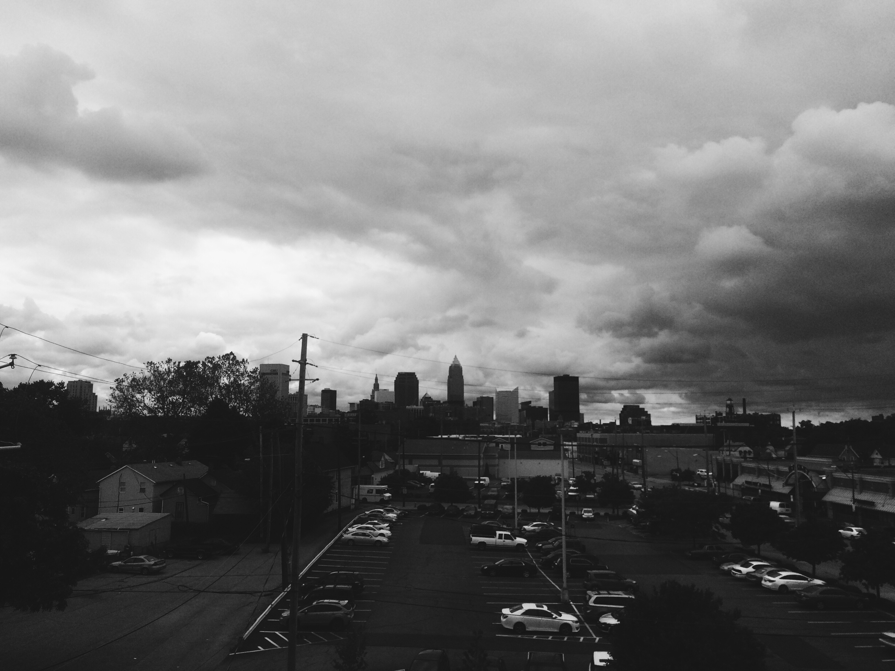
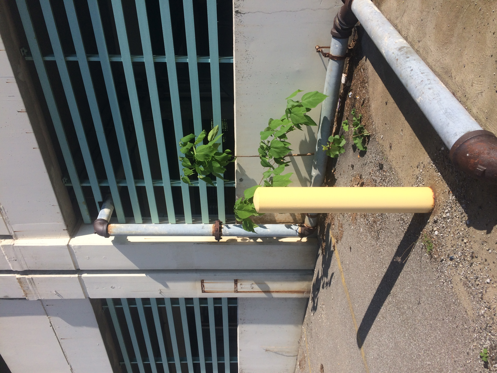

Not much going on this morning. Slight anxiety over the fact that a client had not yet made a descision on a design direction for a creative sprint. Thankfully we got a call and an go ahead on concept 2.
Becuase of the Creative Sprint for CCPL, the Van Aken Street Naming project has gotten pushed to the back burner. I went back and made a couple changes to a survey that Roger then sent out to the client. I am excited to hear what they come back with. We were able to narrow the selection of names quite quickly. But honestly at this point I could personally recite the history of Shaker Heights.
LUNCH
Since it had been a slow day I just ate at my desk and worked on this blog. Cory and I chatted about design, jobs, motivation, and Florence + The Machine – who we are 90% sure is Aoife's alter ego.

View of the Cleveland from Gris Studio.
AFTERNOON
CCPL was the major project for the afternoon. I am pretty sure Alexander noticed that I didn't really have anything to work on, so he invited me to the meeting with photogrpaher Paul Sobota and his wife Dana. We grabbed coffee from our fave place: Rising Star and headed over to Mid Town.
I have never been to a photo shoot/studio so this was a great introduction. Dana met with Roger, Alexander and I to work out the details on models, extra props for the shoot, and location ideas. We decided on four environments to shoot for the CCPL App campaign: pool, woods/backyard, parking lot, and bustop.
Peter B. Lewis Auditorium at CIA.

Garage in Uptown.
AFTER-HOURS FUN
AIGA Cleveland brought in Paula Scher to speak on branding as living, breathing designs. I was totally unprepared for the small talk mingling but it wasn't all bad. I finally got to meet Shelby Muter who I follow on intsagram (and you should too).